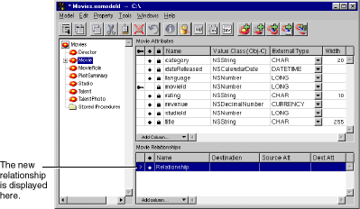
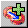
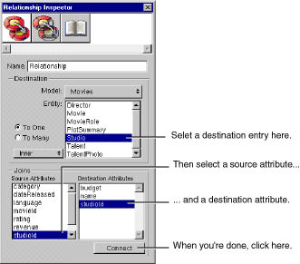

Table of Contents
Table of Contents  Previous Section
Previous Section
 Add Relationship.
Add Relationship.

Figure 25. Adding a Relationship
Alternatively, you can click the  button in the toolbar. In either case, the text "Relationship" appears in the relationship table at the bottom of the window.
 Inspector.
Inspector.

Figure 26. The Relationship Inspector
Typically, you form a relationship by connecting a primary key in one entity and a corresponding foreign key in another entity. In a to-one relationship, the source entity usually holds the foreign key, while the destination entity holds the primary key. The opposite is true for a to-many relationship. For example, studioId is a foreign key for Movie, while it's the primary key for Studio.
EOModeler assigns the relationship a default name; in this example it's "studio." You can edit this name if desired using either the Inspector or the table view.
 Next Section
Next Section